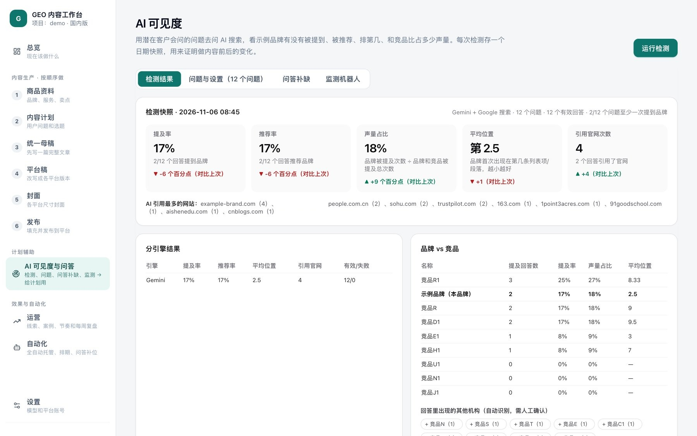
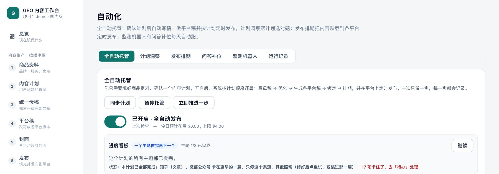
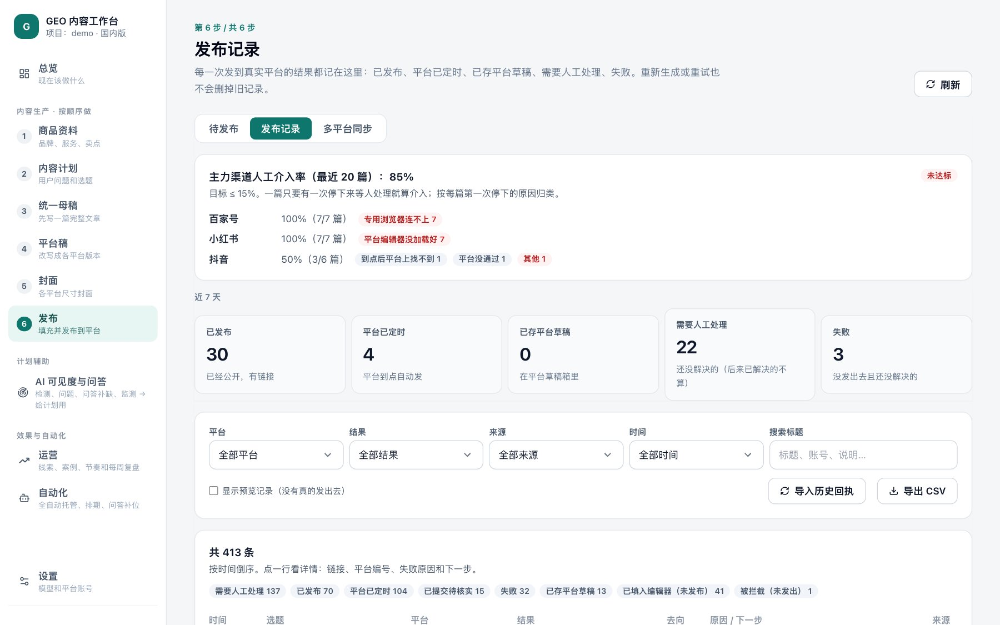

A multi-agent system that plans, writes, checks, adapts and publishes content across Chinese and global platforms, then measures whether AI answer engines mention it, and feeds what it learns into the next plan.
一个多智能体系统：规划、撰写、检查、按平台改写并发布内容，覆盖中国与海外平台；再检测 AI 答案引擎是否提到它，把结果用于下一轮计划。
People now ask an answer engine such as Doubao or Google's Gemini which provider to choose, and the engine names a few organisations. Research on Generative Engine Optimization (GEO) mostly asks how to rewrite one page so that it gets cited. In daily use, a team also has to decide which questions to answer, write something worth citing, adapt it to many platforms, publish it, confirm it is actually online, and check later whether the engines mention it. GEO-Loop handles these steps as one loop and records each of them.
现在越来越多人直接问豆包、Google Gemini 这类 AI：“该选哪一家？”AI 会给出一个答案，点名几家机构。现有的生成式引擎优化（GEO）研究，大多只研究怎么改写一篇文章让 AI 引用。实际工作中还要决定回答哪些问题、写出值得引用的内容、适配多个平台、发布、确认真的上线，过一段时间再看 AI 有没有提到你。GEO-Loop 把这些步骤做成一个闭环，并把每一步都记录下来。
Select a stage to see what the system does there.
点击任一环节，查看系统在这一步做什么。
Dashed outline: release controls (gate, verification).虚线框：放行把关环节（发布门槛、核验）。
The same loop faces two different ecosystems of answer engines and platforms. Most GEO research looks only at English engines.
同一个闭环，面对两套不同的 AI 答案引擎和平台生态。现有 GEO 研究几乎只看英文引擎。
Screens from the Chinese edition, captured on a sandboxed copy of the deployment data with organisation names replaced (“示例品牌” is the company, “竞品” are competitors).
以下为中文版界面，截自运行数据的沙箱副本；机构名称已替换（“示例品牌”为本公司，“竞品”为竞争对手）。



China edition: one project, 19 days, autopilot with review before publication. Figures are counted from the system's own ledgers.
国内版：一个项目，运行 19 天，托管模式加发布前审核。数字来自系统自己的运行记录。
The answer site was low because its scheduled build workflow was missing at first; the system now installs it.
问答站比例低，是因为一开始缺少定时构建流程；系统现在会自动安装。
Drafts most often lacked dates on time-sensitive facts (78% of reviews) and sources for numbers and policies (64%). Instead of asking the writer to “add sources”, the system runs one grounded search per topic and keeps only sources the search actually returned.
草稿最常缺的是时效信息的日期（78% 的检查）和数字、政策的出处（64%）。系统不会让写手“补个来源”，而是每个选题做一次联网检索，只保留检索真正返回的来源。
For “which provider should I choose” questions, the 51 pages Doubao cited included no public-authority page; most were recommendation listicles on portals and open publishing platforms. This is one reason the system publishes natively to many platforms.
对“该选哪一家”这类问题，豆包引用的 51 个网页里没有一个来自政府等公共机构，大多是门户网站和开放平台上的推荐榜单文章。这也是系统要在多个平台上原生发布的原因之一。